「YOKOSUKA軍港めぐり」に行ってきたった。
公開日：
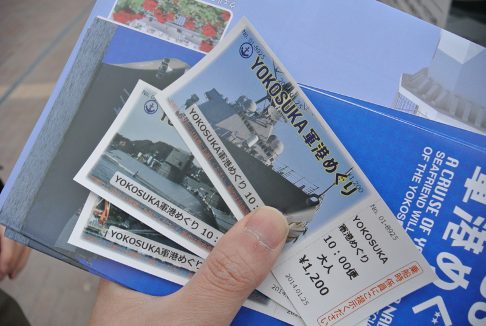
以前に Y 氏と 横須賀のヴェルニー公園にも寄ってきた（軍艦長門碑・軍艦山城之碑） - だるろぐ に行ったとき、「1回ぐらい体験してみたいよねー」と話していた「YOKOSUKA軍港めぐり」。とうとう実現させましたよ。
ちなみに、Y 氏はあのあと奥さんと一度行ったことがあるらしい。うらやまけしからんな。まぁ、2度目ということもあってだいぶ頼りになったけれど。
軍艦の宝箱やで！
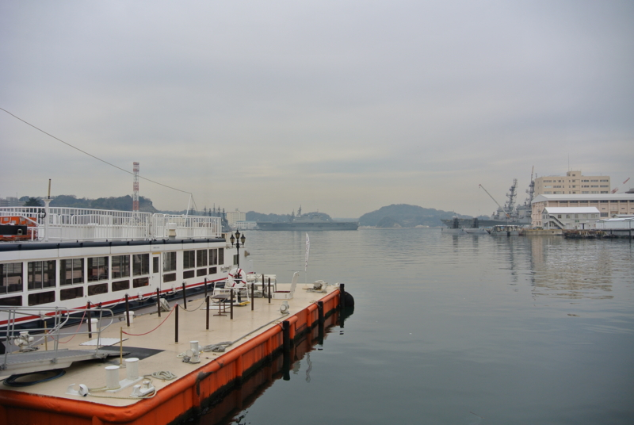
本日、波低カレド天気晴朗ナラズ。でも、案内のひと曰く「いつもは見られない船もたくさんいるようだ」とのことで期待。どんな船に会えるかは割りと運次第らしく、案内のひとも第一便*1を出すまでは分からないのだそうだ。
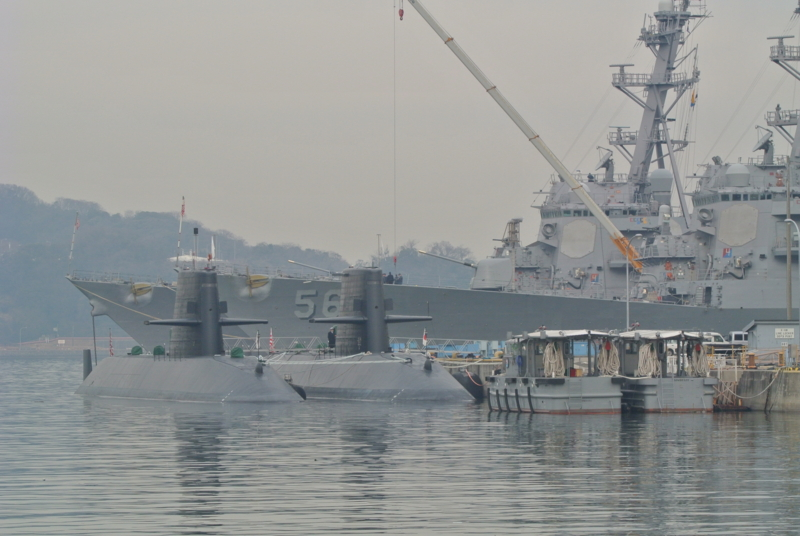
まずは米駆逐艦と潜水艦。艦橋になんかベタッと六角形の板が貼ってあるのがいわゆる「イージス艦」という奴らしい。「56」と書かれた船が ジョン・S・マケイン (ミサイル駆逐艦) - Wikipedia 。その奥にいるのが ラブーン (ミサイル駆逐艦) - Wikipedia 。
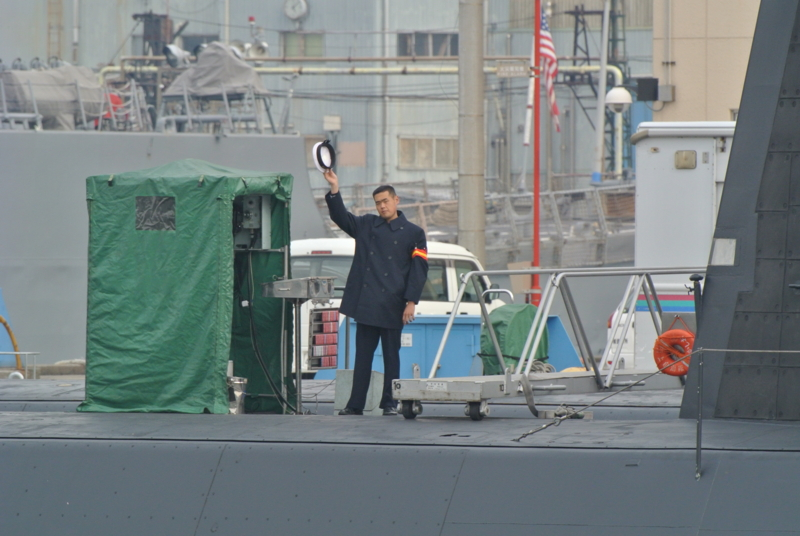
潜水艦から帽子を振ってもらった。クソ忙しいだろうに申し訳なし。こちらもロイヤルスマイルでお応えする。
それにしても、Nikon 1 V1 ＋ FT-1 ＋ AF-S VR Zoom-Nikkor 70-300mm f/4.5-5.6G はやりすぎた。
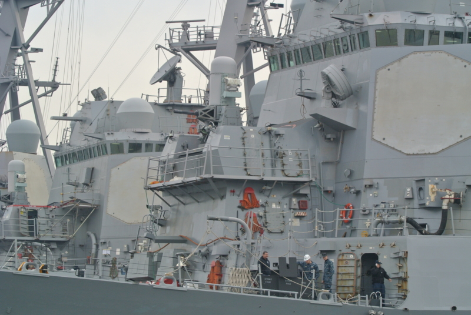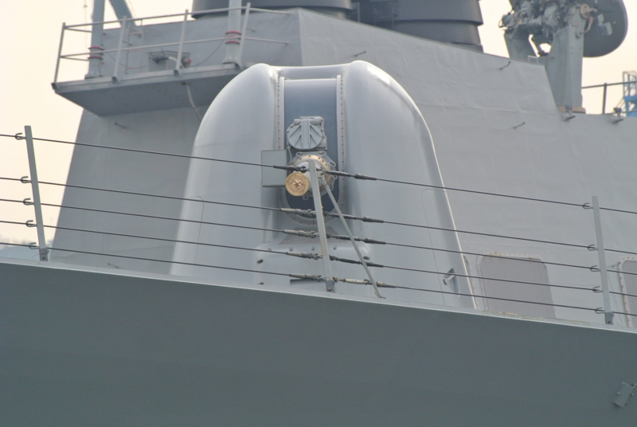
焦点距離が 2.7 倍の 189-810 mm になるので、引いた絵が取れない。最初のほうはずっと単装砲を撮って遊んでた。
空母と海洋観測艦
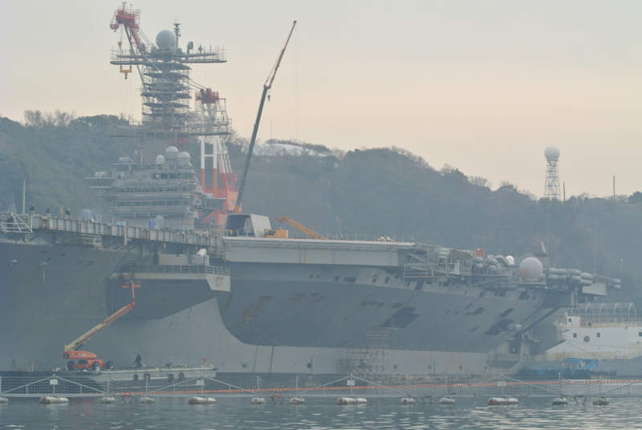
艦橋の整備中（？）の ジョージ・ワシントン (空母) - Wikipedia 。去年の冬あたりからいるみたい。
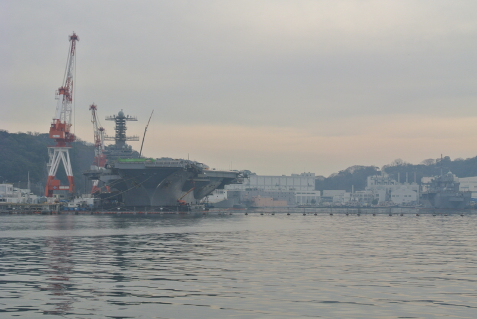
揺れる船上でレンズを交換して 28mm でも撮ってみた。船から肉眼で見るとだいたいこんな感じの距離感。
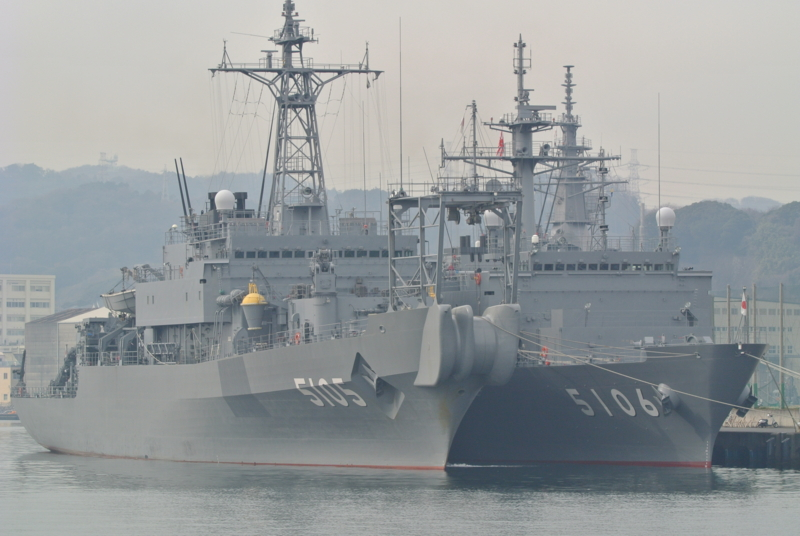
海洋観測艦「しょうなん（AGS-5106）」と「にちなん（AGS-5105）」。海図とかを書くのがお仕事らしい。
木の船、プラスティックの船
お次は掃海艇。機雷を除去する船だね。
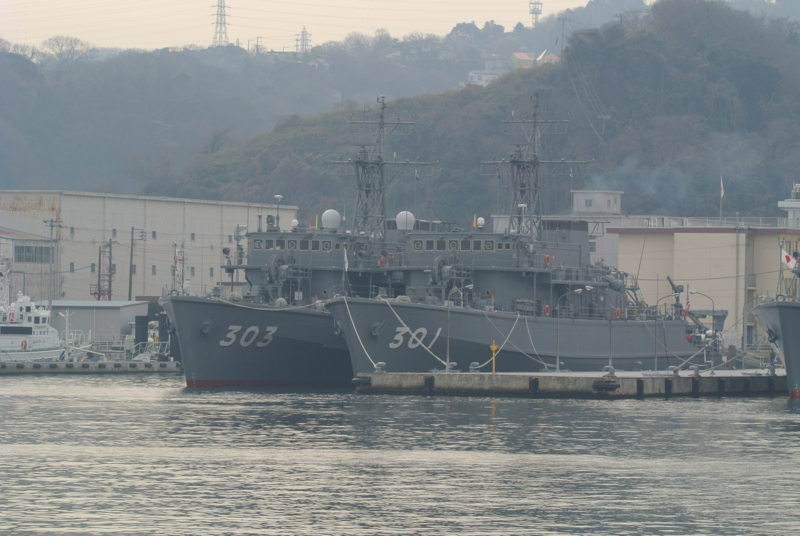
木造バージョン。「やえやま (MSO-301)」と「はちじょう (MSO-303)」
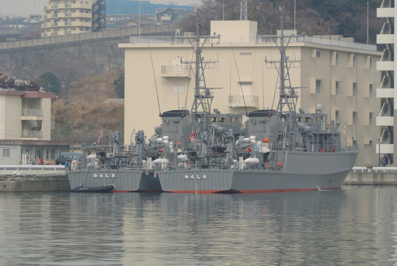
プラスチック（FRP）バージョン。「ひらしま (MSC-601)」と「やくしま (MSC-602)」
機雷は磁気に反応するので、一般的な鋼鉄製の艦船では近づくことができない。なので、木造船やプラスティック船（ボートなど）が必要なんだね。木でこれだけ大きな船を作るのは大変なので、今後はプラスティック製に移行するとの由。両方見られたのはよかった。
あと、この規模の船が遠洋で長期間にわたって作戦を行うのは困難なので、こいつらを支援する掃海母艦「うらが」というのもいる（この子は鋼鉄製で、自身は掃海活動は行えない）。この日もいたのだけど、残念なことにいいポジションが取れなかったので写真には撮れなかった。
こういう薀蓄を聞くのも、割りと勉強になる。
掘割水路を抜けて
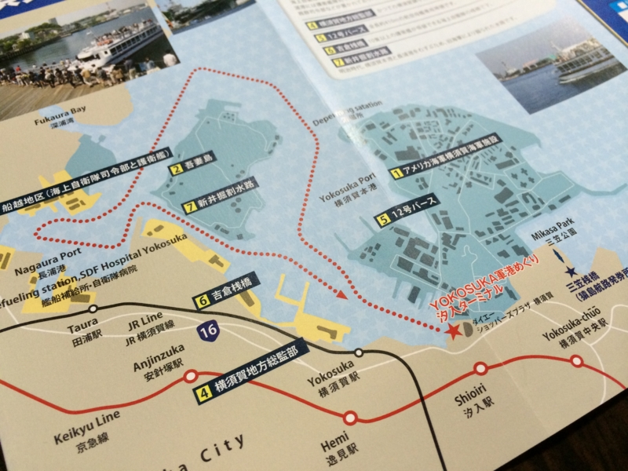
さっきの掃海艇が座ってたあたりが船越地区で、そこから新井掘割という細い水路を通る。ココは明治時代に手掘りで通した運河なのだそうだ。確かにこれがあれば近道だな。あと半島が陸地から切り離される（吾妻島）ので、ここに軍事施設を置いておけば防諜の面でも有利かもしれない。
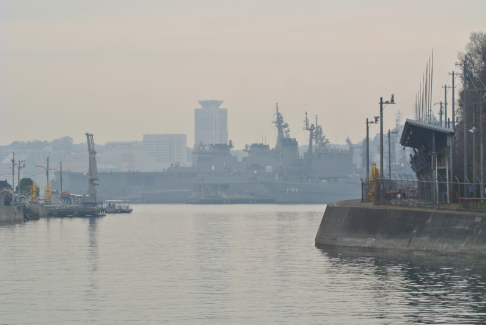
ぼんやりと「ひゅうが（DDH-181）」が見えてきた。手前に「はたかぜ (DDG-171)」がいる。「はたかぜ」の横には護衛艦1隻と、補給艦「ときわ (AOE-423)」が泊まっていた。
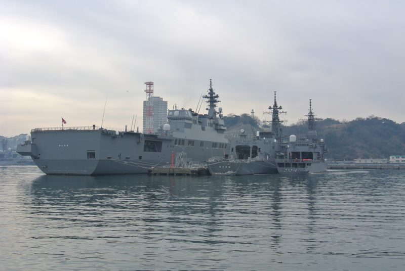
右から訓練支援艦「てんりゅう (ATS-4203)」、護衛艦「むらさめ (DD-101)」、「ひゅうが」。艦尾に書かれた艦名はみな同じ大きさなのだそうだ。「ひゅうが」デカすぎ。訓練支援艦ってのは標的（赤く映ってるやつ）を打ち上げたりするのが役割らしい。けれどこの標的が何億もするらしいので、標的を打つ護衛艦も実弾は発射せず、ロックオンしてお茶を濁すのだという（ぇー
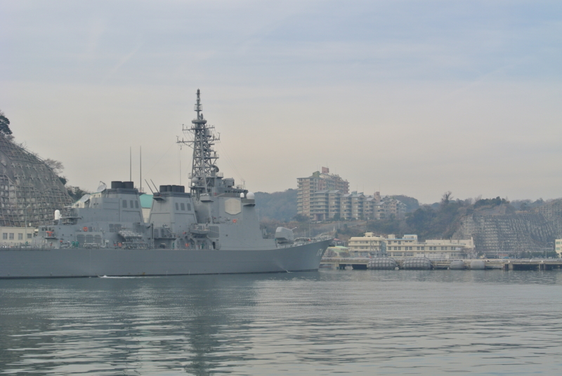
イージスシステム搭載のミサイル護衛艦「きりしま (DDG-174)」。インテリマイクチェックメガネ姉貴の転生版。
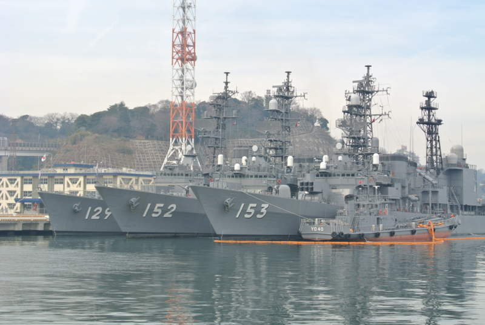
で、最後に護衛艦「やまゆき (DD-129)」「やまぎり (DD-152)」「ゆうぎり (DD-153)」。みんなよく名前を覚えていられるなぁ……。
割りとおなか一杯になった。天気がよければいうことはなかったのだけど。あと、海の上はめちゃくちゃ寒いので、防寒装備はキッチリしていったほうがいいよ！（死
*1:僕らが乗った10時出発の便